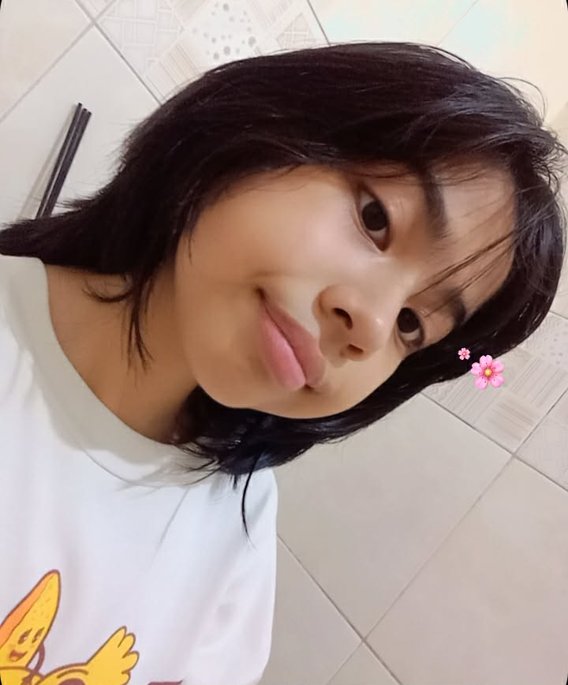
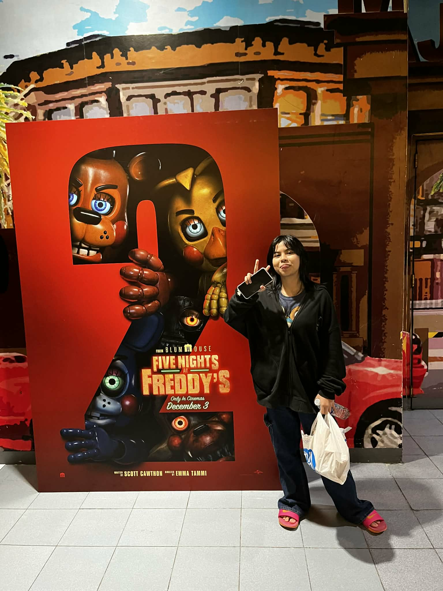
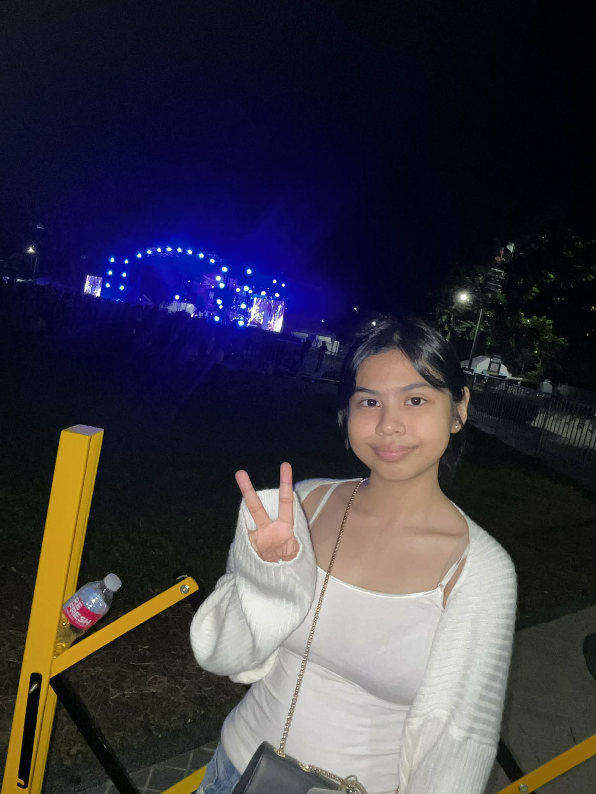
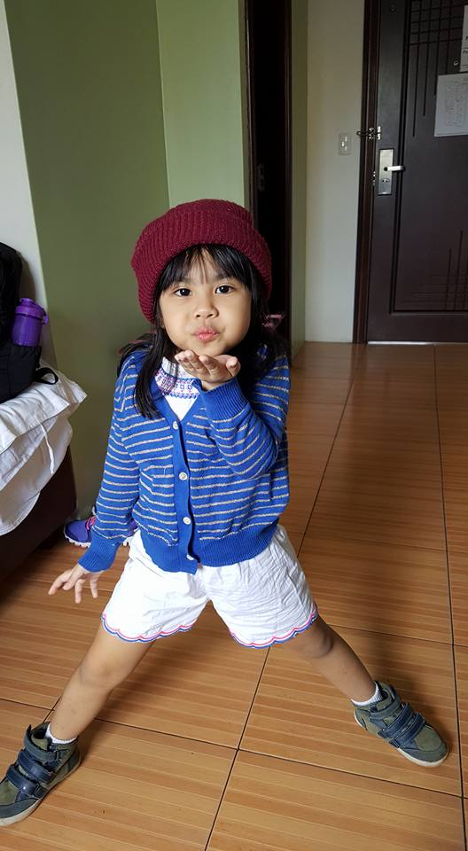
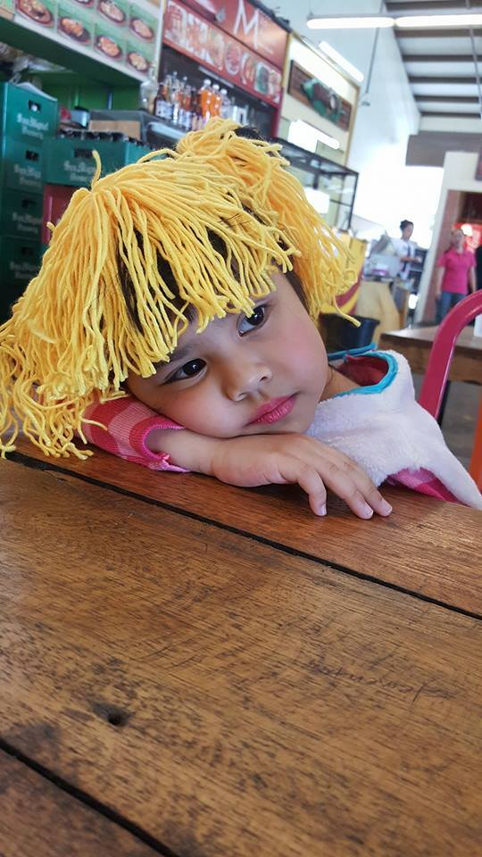
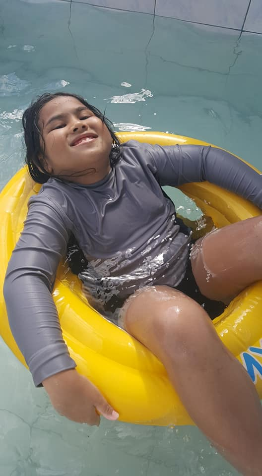

All About Me (⸝⸝⸝╸▵╺⸝⸝⸝)

Hi! My name is Sofia, but you can call me by my last name or simply just Sofi. My MBTI is INTJ-T, though people usually say that I'm more of an extrovert but it really depends on my mood. I enjoy watching essay videos or videos with logical thinking. ✨
• Full Name: Sofia Ron Diaz Valiente
• Birthday: 10-21-11
• Place of Birth: Sagad, Pasig City, Philippines
• Religion: Roman Catholic
• Nationality: Filipino
• Gender: Female
• Birthday: 10-21-11
• Place of Birth: Sagad, Pasig City, Philippines
• Religion: Roman Catholic
• Nationality: Filipino
• Gender: Female
Additional Information:
My Favourites !!
Animal: Dodo Birds and Sharks
Song(s): Aftertaste - Shawn Mendes
Movie(s): The Hunt, Mean Girls (2004)
Show(s): Moral Orel, The Amazing World of Gumball
Colour: Blue, Pink, and Green
My Favourites !!
Animal: Dodo Birds and Sharks
Song(s): Aftertaste - Shawn Mendes
Movie(s): The Hunt, Mean Girls (2004)
Show(s): Moral Orel, The Amazing World of Gumball
Colour: Blue, Pink, and Green
✿Story of my Life
All people in the world have a story of their lives, and so do I. I am Sofia Ron D. Valiente, and I am 14 years old. Born on October 21, 2011. I grew up in a loving family in Sagad, Pasig City. My father's name is Ronald Valiente, and my mother's is Gemma Diaz. Although I mostly grew up without a mom, my step-mom came eventually.
I also lived in the U.S for a while, and came back to the Philippines. My life is filled with great memories. Traveling to different places, meeting new people, and trying new experiences. I would sometimes visit my mother's side, probably once every two years. I am an only child here in our household, but I have an older sister living in Marilao, Bulacan. My world revolves around my family, studies, and my favourite k-pop boy group, "Stray Kids". I love them very dearly and I adore their music very much. Discovering their music gave me a meaning to life, seeing that people behind the screen are actual human beings too, and have feelings. Different emotions can fill them too. I also realized that people also suffer from similar problems, not only me. And I am glad that I can relate to them similarly.
I hope that one day, success can finally meet ends with me, giving me hope that I can take care of my father once I'm older and stable enough to stand on my own feet. I love my father so much, and I will give everything and anything to him.
All people in the world have a story of their lives, and so do I. I am Sofia Ron D. Valiente, and I am 14 years old. Born on October 21, 2011. I grew up in a loving family in Sagad, Pasig City. My father's name is Ronald Valiente, and my mother's is Gemma Diaz. Although I mostly grew up without a mom, my step-mom came eventually.
I also lived in the U.S for a while, and came back to the Philippines. My life is filled with great memories. Traveling to different places, meeting new people, and trying new experiences. I would sometimes visit my mother's side, probably once every two years. I am an only child here in our household, but I have an older sister living in Marilao, Bulacan. My world revolves around my family, studies, and my favourite k-pop boy group, "Stray Kids". I love them very dearly and I adore their music very much. Discovering their music gave me a meaning to life, seeing that people behind the screen are actual human beings too, and have feelings. Different emotions can fill them too. I also realized that people also suffer from similar problems, not only me. And I am glad that I can relate to them similarly.
I hope that one day, success can finally meet ends with me, giving me hope that I can take care of my father once I'm older and stable enough to stand on my own feet. I love my father so much, and I will give everything and anything to him.





